Unit 02 / 7 hours
Android OS and basics
Understand Android's operating system, history, features, advantages, and disadvantages.
Topics in this unit
2.1 Introduction to Android
Android is an open-source, Linux-based mobile operating system developed by Google.
2.2 Android Architecture Overview
Kernel and Android runtime concepts.
2.3 Android Application Components
Activities and the Android Manifest File.
2.4 UI Components in Android (Jetpack Compose)
Jetpack Compose UI components.
2.5 Intent and its type
Intent purposes, explicit intents, and implicit intents.
No topic matches that search yet.
2.1 Introduction to Android
Android is an open-source, Linux-based mobile operating system developed by Google. It runs on smartphones, tablets, smart TVs (Google TV), wearables (Wear OS), cars (Android Auto / Automotive) and many other devices. It is the most widely used mobile operating system in the world.
Key points:
- Android is an open-source mobile operating system.
- Android Inc. initially developed Android using the Linux kernel.
- Google acquired Android Inc. in 2005 and introduced Android to the public in 2007.
- Android was mainly designed for touchscreen mobile devices.
- Users can download Android applications from the Google Play Store.
2.1.1 Brief history
| Year | Event |
|---|---|
| 2003 | Android Inc. founded in Palo Alto, USA, by Andy Rubin, Rich Miner, Nick Sears and Chris White |
| 2005 | Google acquires Android Inc. |
| 2007 | Open Handset Alliance (OHA) formed by Google and other companies; Android announced |
| 2008 | Android 1.0 released; first Android phone: HTC Dream (T-Mobile G1) |
| 2009–2018 | Versions named after desserts: Cupcake, Donut, Eclair, … KitKat, Lollipop, Marshmallow, Nougat, Oreo, Pie |
| 2019 | Android 10: Google drops public dessert names and uses only version numbers |
| 2026 | Android 17 released on 16 June 2026 (latest major version at the time of writing) |
Tap a version to explore
Android version timeline
From dessert names to numbered releases, each milestone added a new part of the Android experience.
Select a version above to see its key features.
2.1.2 Android Market Share and Impact in Mobile Development
Android is the world's leading mobile operating system, with a global market share of roughly two-thirds to three-quarters. Its open, multi-vendor model has made it the main platform for mobile app development worldwide. Android runs on smartphones, tablets, smartwatches (Wear OS), TVs (Android TV / Google TV), cars (Android Auto / Automotive OS) and many IoT devices.
Impact of Android on Mobile Development
- Democratization of app development
Android made app development open and affordable. Students and small startups can build and publish apps with a normal PC and a low one-time fee. This is why Android is usually the first platform taught in colleges and used in many startups, especially in South Asia. - Largest user reach
Because of its large market share, an Android app can reach billions of users. Businesses targeting mass markets (banking, e-wallets like eSewa/Khalti, ride-sharing, e-commerce, government services) often release on Android first or Android only. - Standard tools and languages
• Android Studio (official IDE, based on IntelliJ IDEA) with emulator, profiler, layout inspector.
• Languages: Java (traditional) → Kotlin (now preferred, "Kotlin-first").
• Android Jetpack: libraries such as Room, ViewModel, LiveData, Navigation, WorkManager.
• Jetpack Compose: modern declarative UI, replacing XML layouts in new projects.
• Gradle build system.
Android's popularity has made Kotlin one of the fastest-growing programming languages. - App economy and distribution
• Google Play Store is the largest app store by number of apps and downloads.
• Android also allows side-loading (APK install) and third-party stores (Samsung Galaxy Store, Huawei AppGallery, Amazon Appstore).
• Monetization models: free with ads (AdMob), in-app purchases, subscriptions, paid apps. - Expansion beyond phones
Developers can use the same skills to build apps for Wear OS, Android TV/Google TV, Android Auto, tablets, foldables, Chromebooks and IoT devices. - Career and job market
The large market share creates high demand for Android developers, making Android skills important for IT graduates and freelancers. - Open-source community
A massive community provides libraries (Retrofit, Glide, Hilt), tutorials, Stack Overflow answers and GitHub projects, which reduces development time.
2.1.3. Features of Android
Android gives users and developers a rich, flexible platform. Its main features are:
- Open source and customizable – The source code (AOSP) is free. Manufacturers can modify it (e.g. Samsung One UI, Xiaomi HyperOS), and users can change launchers, themes, widgets and default apps.
- Connectivity – Supports 4G LTE, 5G, Wi-Fi (including Wi-Fi 6/7), Bluetooth, NFC and USB. Users can make calls, send SMS and transfer data over mobile networks. (Older 2G/CDMA networks are now largely shut down.)
- Wi-Fi Direct and nearby sharing – Devices can connect and share files directly with each other without a router (Quick Share).
- Location-based services – APIs for GPS, network location and Google Maps, used by apps such as ride-sharing and food delivery.
- Data storage – Lightweight relational database SQLite (usually through the Jetpack Room library), plus Shared Preferences/DataStore, internal and external file storage, and cloud storage.
- Media support – Plays and records many audio, video and image formats, such as MP3, AAC, Opus, MP4 (H.264), H.265/HEVC, VP9, AV1, JPEG, PNG, GIF, WebP, HEIF and AVIF.
- Hardware access – Apps can use the camera, microphone, GPS, fingerprint and face sensors, accelerometer, gyroscope, proximity and light sensors.
- Web browsing and WebView – Built-in Chromium-based browser engine (Android System WebView) supporting HTML5, CSS3 and JavaScript; apps can embed web pages.
- Multitasking – Several apps run at the same time. Users can switch apps, use split-screen and picture-in-picture modes.
- Reusable app components – Apps are built from Activities, Services, Broadcast Receivers and Content Providers. One app can use another app's components through Intents (e.g. opening the camera app to take a photo), and native apps can be replaced.
- 2D/3D graphics – Supports OpenGL ES and Vulkan for games and graphics-heavy apps.
- Rich notifications and widgets – Interactive notifications, notification channels and home-screen widgets.
- Security and privacy – Each app runs in its own sandbox; runtime permissions (since Android 6.0); Google Play Protect scanning; regular monthly security patches; privacy dashboard.
- Modern UI – Material Design (Material You) with dynamic colour themes; Jetpack Compose for building UI.
- Multi-language and accessibility support – Supports many languages (including Nepali) and accessibility tools like TalkBack and Live Caption.
- Google services integration – Google Play, Gmail, Maps, Drive, Google Assistant / Gemini and automatic cloud backup.
2.1.4. Advantages (Pros) of Android
- Open source and free – No licence fee for manufacturers; anyone can study and improve the code.
- Wide choice of devices – Available from many brands (Samsung, Google Pixel, Xiaomi, OnePlus, Vivo, Oppo, Motorola, etc.) at every price range, from budget to flagship.
- Huge app ecosystem – Millions of free and paid apps and games on Google Play, plus other stores.
- High customization – Users can change launchers, icon packs, widgets, keyboards and default apps, which is not as easy on iOS.
- Google services integration – Gmail, Maps, YouTube, Drive and Assistant work seamlessly with one Google account.
- Easy to use – User-friendly interface with gestures, quick settings and helpful tools.
- Flexible file handling – Easy file transfer over USB-C, expandable storage (microSD) on many phones, USB OTG support and an open file system.
- Sideloading – Apps can be installed from outside the Play Store (APK files) when needed.
- Developer friendly – Free tools (Android Studio, SDK, emulator), well-known languages (Kotlin, Java) and a very large user base.
- Good multitasking – Split-screen, picture-in-picture and background services.
- Hardware innovation – New form factors such as foldable phones and stylus devices usually appear first on Android.
2.1.5. Disadvantages (Cons) of Android
- Fragmentation – Thousands of device models run different Android versions and screen sizes, so developers must test on many devices.
- Slow or uneven updates – Updates depend on the manufacturer; budget phones may get few or late OS and security updates.
- Malware risk – Open nature and sideloading APKs from unknown sources can expose users to viruses, spyware and fake apps.
- Bloatware – Many phones come with pre-installed apps that users cannot easily remove.
- Advertisements – Many free apps show unavoidable ads, which waste time and data.
- Battery drain – Background apps and heavy usage can drain the battery quickly, especially on low-end devices.
- Privacy concerns – Deep integration with Google services means a lot of user data is collected.
- Inconsistent performance – Low-cost phones with limited RAM may lag or hang.
- Internet dependence – Many features (sync, cloud backup, app updates, assistant) need Wi-Fi or mobile data.
- Inconsistent user experience – Each manufacturer's custom skin looks and works differently.
2.2 Android Architecture Overview
2.2.1 Kernel
A kernel is the central part of an operating system. It runs with high privileges and controls important system resources.
The kernel is responsible for managing:
- CPU
- memory
- storage devices
- input/output devices
- processes
- networking
- security
- hardware drivers
The kernel stays loaded in memory while the computer is running.
Linux Kernel
The Linux kernel is the core part of the Linux operating system. It works as a bridge between the computer hardware and the software applications running on the computer.
Applications cannot normally control hardware directly. They request services from the kernel, and the kernel communicates with the hardware on their behalf. The Linux kernel is the main component of the Linux operating system that manages hardware resources and provides services to software programs.
Features of the Linux Kernel
The Linux kernel contains many important features. The major features are explained below.
1. Process Management
A process is a program that is currently being executed. The Linux kernel is responsible for creating, managing, scheduling, and terminating processes.
The kernel decides:
- which process should use the CPU,
- how long a process can use the CPU,
- when a process should wait,
- when another process should run.
This is known as CPU scheduling or process scheduling.
Linux supports multitasking, which means many processes can appear to run at the same time.
Main responsibilities
- Creating processes
- Terminating processes
- Scheduling CPU time
- Managing process priorities
- Performing context switching
- Supporting communication between processes
2. Memory Management
The Linux kernel manages the computer's main memory, also called RAM.
Every program needs memory while it is running. The kernel decides how much memory should be given to each process.
It also prevents one process from directly accessing the memory of another process without permission.
Main functions of memory management
- Allocating memory to processes
- Releasing unused memory
- Protecting memory areas
- Managing virtual memory
- Keeping track of free and used memory
3. CPU Scheduling
CPU scheduling is closely related to process management. A CPU can execute only a limited number of instructions at a time. When many programs are running, the Linux kernel decides which process should get CPU time.
The scheduler tries to provide:
- good system performance,
- fair CPU usage,
- fast response time,
- efficient resource utilization.
Processes may also have different priorities.
For example, an important system process may receive CPU time before a less important background process.
4. Device Management
A computer contains many hardware devices such as:
- keyboard
- mouse
- hard disk
- printer
The Linux kernel manages communication between these devices and software programs.
It uses special software components called device drivers.
5. Input/Output Management
Input/Output, commonly called I/O, refers to communication between the computer and external or internal devices.
Examples include:
- reading data from a keyboard,
- writing data to a disk,
- receiving network packets,
- sending information to a printer.
The Linux kernel manages these operations efficiently.
It also coordinates situations where multiple programs want to use the same hardware device.
6. Power Management
The Linux kernel manages the power consumption of the computer.
This feature is especially important for:
- laptops,
- smartphones,
- embedded systems,
- battery-powered devices.
Power management helps reduce unnecessary power usage.
The kernel may perform tasks such as:
- reducing CPU speed when the system is idle,
- putting devices into low-power states,
- controlling sleep mode,
- controlling suspend and resume,
- managing battery-related functions.
2.2.2 Android Runtime
Compiling Process of Android Application
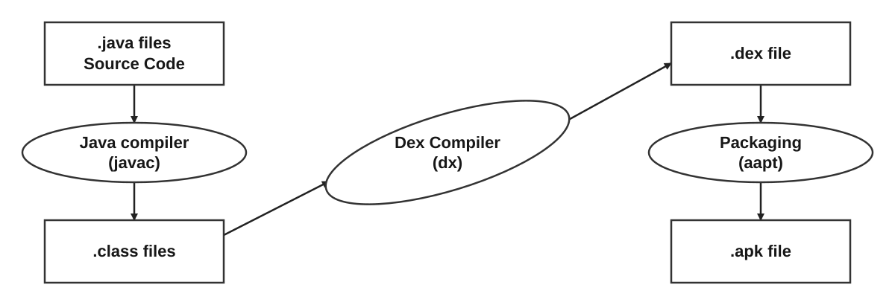
Dalvik Virtual Machine (DVM) in Android
DVM (Dalvik Virtual Machine) is a virtual machine that was developed by Google to execute Android applications. It was the primary application runtime used in earlier versions of the Android operating system, before being replaced by Android Runtime (ART).
DVM was specially designed for mobile devices that had limited resources, such as low processing power, small memory capacity (RAM), and limited battery life.
Android applications were commonly developed using the Java programming language. However, Android did not directly execute standard Java bytecode using the traditional Java Virtual Machine (JVM). Instead, Android used Dalvik Virtual Machine to execute a special type of bytecode called Dalvik Executable (DEX) bytecode.
The DEX bytecode was stored in files with the .dex extension.
Starting with Android 2.2 (Froyo), Dalvik included a Just-In-Time compiler to improve execution performance.
Android Runtime (ART)
Android Runtime (ART) is the managed application execution environment used by the Android operating system. It is responsible for executing Android application bytecode, managing application memory, performing garbage collection, and supporting efficient application execution.
ART was developed by Google as the successor to the Dalvik Virtual Machine (DVM). It became the default Android runtime starting with Android 5.0 (Lollipop) in 2014. ART understands this DEX bytecode format. It can interpret the bytecode and compile it into native machine code using compilation techniques such as Ahead-Of-Time (AOT). Native machine code consists of instructions that a device's processor can execute directly.
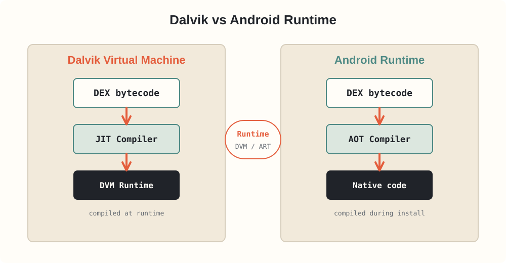
| DALVIK VIRTUAL MACHINE | ANDROID RUN TIME |
|---|---|
| Faster Booting time | Rebooting is significantly longer |
| Cache builds up overtime | The cache is built during the first boot |
| Occupies less space due to JIT | Consumes a lot of storage space internally due to AOT |
| Works best for small storage devices | Works best for Large storage devices |
| Longer app loading time | Extremely Faster and smoother Faster and app loading time and lower processor usage |
| Uses JIT compiler(JIT: Just-In-Time) Thereby resulting in lower storage space consumption | Uses AOT compiler(Ahead-Of-Time) thereby compiling apps when installed |
| Application lagging due to garbage collector pauses and JIT | Reduced application lagging and better user experience |
| App installation time is comparatively lower as the compilation is performed later | App installation time is longer as compilation is done during installation |
| DVM converts bytecode every time you launch a specific app. | ART converts it just once at the time of app installation. That makes CPU execution easier. Improved battery life due to faster execution. |
| It is slower than ART. | It is faster. |
| It does not provide optimized battery life as it consumes more power. | It provides optimized battery performance as it consumes less power. |
| While considering Booting, then this device is fast. | It lags in term of booting. |
Comparison of JIT and AOT Compilation
| Aspect | Just-In-Time (JIT) Compilation | Ahead-Of-Time (AOT) Compilation |
|---|---|---|
| Timing of Compilation | Compiled at runtime, just before execution | Compiled before execution, typically during installation or build time |
| Execution Speed | Initial execution might be slower due to compilation overhead, but optimized code can lead to faster execution over time | Faster startup times as code is already compiled, but may lack runtime optimizations |
| Memory Usage | Typically lower memory footprint as only frequently executed code is compiled | Higher memory usage as entire codebase is compiled upfront |
| Portability | Code can adapt to specific hardware and runtime environment, enhancing portability | Code is optimized for a specific platform during compilation, potentially reducing portability |
| Dynamic Optimization | Enables dynamic optimization based on runtime data | Optimizations are static and determined at compilation time |
| Platform Independence | Allows for platform-independent code execution | May result in platform-specific binaries |
2.2.3 Android OS architecture
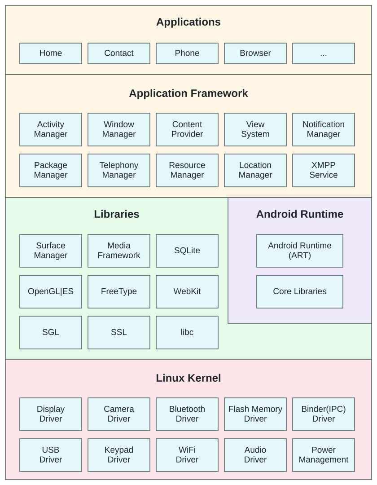
Applications
The Applications layer is the topmost layer of the Android architecture. It contains all the applications that users interact with directly on an Android device. These applications use the services and APIs provided by the Application Framework to perform different tasks.
Android applications are mainly divided into two categories:
- System Applications: Applications that come pre-installed with the Android operating system, such as Phone, Contacts, Settings, Camera and Messaging.
- User Applications: Applications installed by users from the Google Play Store or other sources, such as WhatsApp, Instagram, Facebook and games.
Android applications are commonly developed using Java or Kotlin programming languages. Each application generally runs in its own process and operates within an isolated environment called an application sandbox, which helps maintain security and privacy.
Application Framework
The Application Framework is the layer below the Applications layer. It provides a collection of Application Programming Interfaces (APIs), system services and reusable components that developers use to build Android applications.
Instead of developing every functionality from scratch, developers can use the services provided by the Application Framework. For example, an application can display notifications, access location information or manage its user interface using framework APIs.
Major components of the Application Framework
a. Activity Manager
The Activity Manager manages the lifecycle of application activities and tasks. It handles the creation, starting, stopping and destruction of activities. It also helps manage the activity back stack, allowing users to navigate between different screens of an application.
b. Window Manager
The Window Manager manages application windows displayed on the device screen. It controls their position, size, visibility and arrangement.
c. Content Provider
The Content Provider provides a standard mechanism for accessing and sharing data between applications in a controlled and secure manner. For example, an application can access contact information using a Content Provider with the required permission.
d. View System
The View System provides the user interface components required to develop Android applications. It includes components such as buttons, text fields, images, checkboxes, lists and layouts.
Libraries
The Libraries layer consists of a collection of native libraries that provide important functionality to the Android operating system and its applications. Most of these libraries are written in C and C++ programming languages.
These libraries support various operations such as graphics rendering, multimedia processing, database management, web content rendering and network communication.
Applications generally access these libraries through the APIs provided by the Application Framework, although some native libraries can also be accessed directly through the Android Native Development Kit (NDK).
Major components of the Libraries layer
a. Surface Manager
The Surface Manager manages graphical surfaces displayed on the device screen. It combines graphical content from different applications and system components to produce the final screen output. In Android, SurfaceFlinger performs the main display composition operations.
b. Media Framework
The Media Framework provides support for recording, playing and processing audio, video and image files. It supports various multimedia formats such as MP3, AAC, MP4, JPEG and PNG.
c. SQLite
SQLite is a lightweight relational database engine used for storing and managing structured data locally on Android devices. It allows applications to perform database operations without requiring a separate database server.
d. OpenGL ES
OpenGL ES stands for Open Graphics Library for Embedded Systems. It provides APIs for rendering two-dimensional and three-dimensional graphics. It is commonly used in mobile games, animations and graphics-intensive applications.
2.3 Android Application Components
2.3.1 Activity and Its Life Cycle
An Activity is one of the fundamental components of an Android application. It represents a screen with a user interface through which users can interact with the application. It provides a window in which an application can display different user interface elements, such as text, buttons, images, input fields and menus. An Android application may consist of a single Activity or multiple Activities, depending on its design and functionality.
Activity Life Cycle
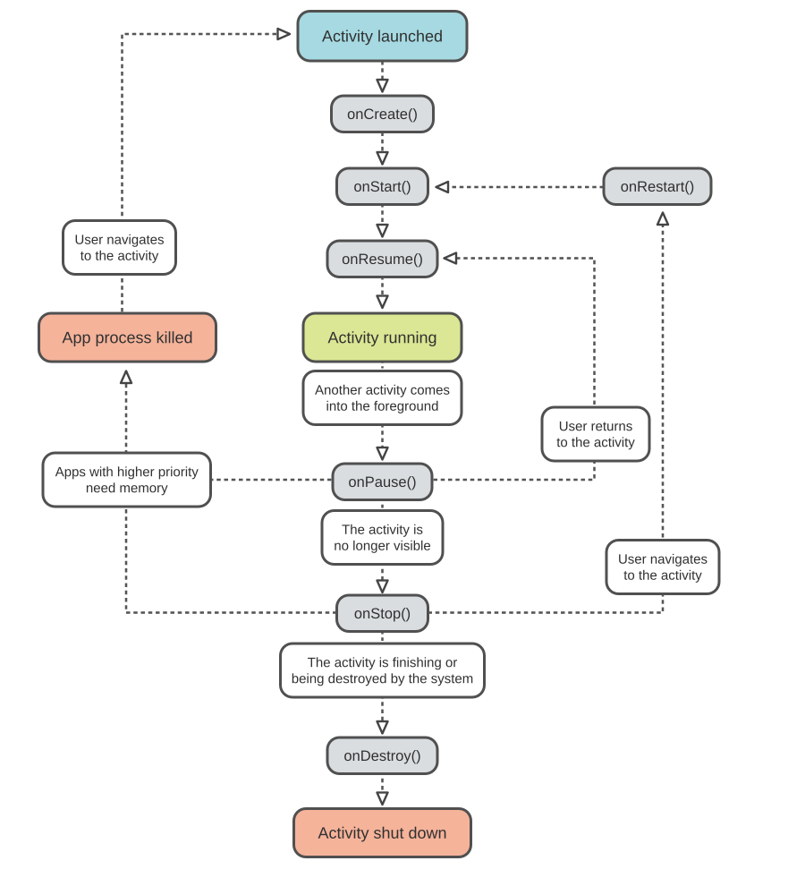
a) onCreate()
The onCreate() method is the first life cycle callback method called when an Activity is created. It is responsible for initializing the Activity and preparing the necessary resources required for its operation.
In this method, the developer defines the user interface, initializes variables, connects user interface components with application logic and restores any previously saved Activity state.
Major functions:
- Initializes variables and application components.
- Loads the user interface using setContentView() for XML-based layouts or setContent() for Jetpack Compose.
- Initializes objects and necessary resources.
- Registers event listeners for user interface components
b) onStart()
The onStart() method is called when an Activity becomes visible to the user. At this stage, the Activity prepares to enter the foreground and become interactive.
This method is called after onCreate() when the Activity is created for the first time, or after onRestart() when a previously stopped Activity becomes visible again.
Major functions:
- Makes the Activity visible to the user.
- Prepares resources required while the Activity is visible.
- Starts operations related to displaying information
c) onResume()
The onResume() method is called when an Activity enters the foreground and becomes ready for user interaction. At this stage, the user can interact with the Activity by clicking buttons, entering text, scrolling and performing other actions.
The Activity remains in the resumed state until an event occurs that causes it to leave this state.
Major functions:
- Allows the user to interact with the Activity.
- Starts or resumes animations.
- Resumes operations that were previously paused.
- Activates resources that are required during active user interaction.
d) onPause()
The onPause() method is called when an Activity begins to leave the resumed state. This usually happens when another Activity comes into the foreground or when the current Activity temporarily loses focus.
The Activity may still be partially or fully visible to the user, but it is no longer in its normal resumed state.
Major functions:
- Pauses operations that require active user interaction.
- Pauses animations or other unnecessary processing.
- Releases resources that are required only during the resumed state.
e) onStop()
The onStop() method is called when an Activity is no longer visible to the user. This may occur when the user switches to another application, presses the Home button or opens another Activity that completely covers the current Activity.
Although the Activity is no longer visible, its instance may still remain in memory. Therefore, the user may return to the Activity without creating it again.
Major functions:
- Stops operations that are unnecessary when the Activity is not visible.
- Releases resources that are no longer required.
f) onRestart()
The onRestart() method is called when a previously stopped Activity is about to become visible again.
This method allows the Activity to prepare itself before returning to the foreground. Unlike onCreate(), it is called when an existing Activity instance is being reused rather than created for the first time.
Major functions:
- Prepares a previously stopped Activity to become active again.
- Reinitializes necessary resources, if required.
- Refreshes application information when necessary.
g) onDestroy()
The onDestroy() method is the final life cycle callback method normally called before an Activity instance is destroyed.
An Activity may be destroyed when the user finishes it, when the developer explicitly calls the finish() method or when Android recreates the Activity because of a configuration change, such as a change in screen orientation.
Major functions:
- Performs final cleanup operations.
- Releases remaining Activity-specific resources.
- Unregisters remaining listeners and callbacks.
- Cleans up objects and operations associated with the Activity.
2.3.2 Android Manifest File
The Android Manifest File is an essential configuration file in every Android application. It contains important information about the application that the Android operating system needs to know before the application can be installed and executed.
The file is named AndroidManifest.xml and is written in XML (Extensible Markup Language). It acts as a communication link between the Android application and the Android operating system.
The manifest file provides information about the application's components, required permissions, hardware and software requirements, and other important configurations.
Functions of Android Manifest File
The Android Manifest File performs several important functions that help the Android operating system understand and manage an application.
- Declares Application Components
The manifest file declares the important components used by an Android application, including Activities, Services, Broadcast Receivers, and Content Providers. - Specifies Application Permissions
The manifest file declares the permissions required by the application to access protected system resources and features. - Defines Application Information
It provides important information about the application, such as its name, icon, theme, and other application-level settings.
Example of Manifest File:
<?xml version="1.0" encoding="utf-8"?>
<manifest xmlns:android="http://schemas.android.com/apk/res/android"
xmlns:tools="http://schemas.android.com/tools">
<application
android:allowBackup="true"
android:dataExtractionRules="@xml/data_extraction_rules"
android:fullBackupContent="@xml/backup_rules"
android:icon="@drawable/ic_launcher_foreground"
android:label="@string/app_name"
android:roundIcon="@mipmap/ic_launcher_round"
android:supportsRtl="true"
android:theme="@style/Theme.MyApplication">
<activity
android:name=".MainActivity"
android:exported="true"
android:label="@string/app_name"
android:theme="@style/Theme.MyApplication">
<intent-filter>
<action android:name="android.intent.action.MAIN" />
<category android:name="android.intent.category.LAUNCHER" />
</intent-filter>
</activity>
</application>
</manifest>Explanation of Manifest Tags:
- <manifest> Element
The <manifest> element is the root element of the Android Manifest File. All other manifest elements are placed inside it.
It defines the Android XML namespace and acts as the main container for the application's configuration.
Example:
<manifest xmlns:android="http://schemas.android.com/apk/res/android">
<!-- Application declarations -->
</manifest>- <application> Element
The <application> element contains information and settings related to the Android application.
It defines application-wide properties, such as the application name, icon, theme, and other configuration settings.
Example:
<application
android:label="My Application"
android:icon="@mipmap/ic_launcher"
android:theme="@style/Theme.MyApplication">
</application>- <activity> Element
The <activity> element declares an Activity used in the application.
An Activity represents an entry point for user interaction, usually providing a screen where users can perform different tasks.
Every Activity that needs to be registered with the Android system must be declared in the manifest file.
Example:
<activity
android:name=".MainActivity"
android:exported="true" />- <uses-permission> Element
The <uses-permission> element declares the permissions required by an application to access protected features or resources of the Android system.
For example, applications may need permission to access the internet, camera, microphone, or location.
Example:
<uses-permission
android:name="android.permission.INTERNET" />
<uses-permission
android:name="android.permission.CAMERA" />2.3.4 Working Mechanism of Permissions in Android
The Android permission mechanism involves several steps, from declaring permissions during application development to granting and verifying permissions during application execution.
Declaration of Permission
The developer first identifies the resources required by the application and declares the corresponding permissions in the AndroidManifest.xml file using the <uses-permission> element.
For example:
<manifest xmlns:android="http://schemas.android.com/apk/res/android">
<uses-permission
android:name="android.permission.INTERNET" />
<uses-permission
android:name="android.permission.CAMERA" />
<application>
<!-- Application components -->
</application>
</manifest>Option 1:
Application Installation
When the application is installed, the Android operating system examines the manifest file and identifies the permissions requested by the application.
Normal permissions are automatically granted. Signature permissions are granted if the required signing conditions are satisfied.
Dangerous permissions generally remain ungranted until the user approves them at runtime.
Option 2:
Runtime Permission
If a runtime permission has not been granted, the application requests permission from the user.
The Android operating system displays a permission dialog that allows the user to approve or deny the request.
The following example demonstrates how an Android application can request camera permission using Kotlin.
Step 1: Declare Permission in AndroidManifest.xml
<uses-permission
android:name="android.permission.CAMERA" />Step 2: Register a Permission Request
The Activity Result API provides a method for requesting permission and receiving the user's response.
private val cameraPermissionLauncher =
registerForActivityResult(
ActivityResultContracts.RequestPermission()
) { isGranted ->
if (isGranted) {
openCamera()
} else {
Toast.makeText(
this,
"Camera permission denied",
Toast.LENGTH_SHORT
).show()
}
}Step 3: Check and Request Permission
private fun checkCameraPermission() {
if (ContextCompat.checkSelfPermission(
this,
Manifest.permission.CAMERA
) == PackageManager.PERMISSION_GRANTED
) {
openCamera()
} else {
cameraPermissionLauncher.launch(
Manifest.permission.CAMERA
)
}
}2.3.5 Fragements and its uses:
Introduction to Fragments
A Fragment is a reusable and independent part of an Android application's user interface (UI) that represents a portion of an Activity. It has its own layout, behavior, and lifecycle, but it must be hosted by an Activity or another Fragment.
Fragments are used to divide an application's user interface into smaller and manageable sections. Each fragment can perform a specific function, making the application easier to develop, maintain, and reuse.
An Activity can contain one or more Fragments, and fragments can be added, removed, or replaced dynamically while the application is running.
For example, consider a shopping application with three sections:
- Home Fragment: Displays available products.
- Cart Fragment: Displays products added to the shopping cart.
- Profile Fragment: Displays user account information.
Instead of creating a separate Activity for every section, developers can use different Fragments within a single Activity.
Advantages of Fragments in Android
1. Reusability: Fragments can be used in multiple Activities or layouts, reducing repeated code and development effort.
2. Modularity: Fragments divide applications into smaller, independent components, making the source code easier to organize and maintain.
3. Flexible UI Design: Fragments allow developers to design different layouts for different screen sizes and orientations.
4. Dynamic UI Management: Fragments can be added, removed, shown, hidden, or replaced at runtime according to user actions.
5. Independent Lifecycle: Each Fragment has its own lifecycle, allowing developers to manage its behavior and resources according to its current state. However, its lifecycle is still controlled by its host.
6. Easier Navigation: Fragments help manage navigation between different screens or sections within a single Activity.
7. Better Code Maintenance: Changes made to one Fragment can often be managed without modifying unrelated parts of the application.
Fragment Lifecycle Methods
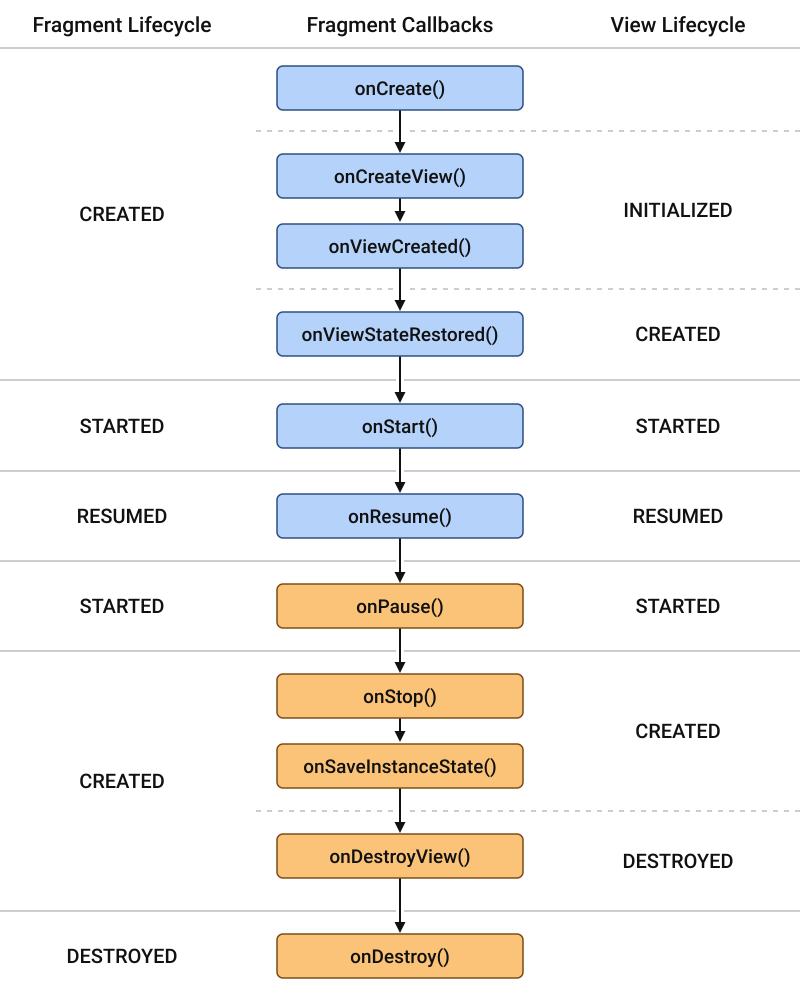
Fragment Example
This Kotlin example shows where common Fragment lifecycle methods are used.
class HomeFragment : Fragment(R.layout.fragment_home) {
override fun onCreate(savedInstanceState: Bundle?) {
super.onCreate(savedInstanceState)
// Initialize Fragment data
}
override fun onViewCreated(
view: View,
savedInstanceState: Bundle?
) {
super.onViewCreated(view, savedInstanceState)
// Initialize UI components
}
override fun onStart() {
super.onStart()
// Fragment enters the started state
}
override fun onResume() {
super.onResume()
// Fragment becomes active
}
override fun onPause() {
super.onPause()
// Fragment leaves the resumed state
}
override fun onStop() {
super.onStop()
// Fragment enters the stopped state
}
override fun onDestroyView() {
super.onDestroyView()
// Clean up UI references
}
override fun onDestroy() {
super.onDestroy()
// Final Fragment cleanup
}
}1. onAttach()
The onAttach() method is called when a Fragment is first connected to its hosting Activity or Context.
At this stage, the Fragment becomes associated with its host and can access its Context.
Main functions:
- Establishes the connection between the Fragment and its host.
- Allows the Fragment to access the application or Activity Context.
- Can be used to initialize dependencies that require a Context.
2. onCreate()
The onCreate() method is called when the Fragment is being created.
This method is mainly used to initialize data and components that do not directly depend on the Fragment's user interface.
Main functions:
- Initializes variables and non-UI components.
- Retrieves initial arguments passed to the Fragment.
- Restores previously saved Fragment state when available.
3. onCreateView()
The onCreateView() method is called when Android needs to create the Fragment's user interface.
It usually inflates an XML layout file and returns the View that represents the Fragment's interface.
Main functions:
- Creates the Fragment's UI.
- Inflates the XML layout into a View hierarchy.
- Returns the root View to be displayed on the screen.
4. onViewCreated()
The onViewCreated() method is called immediately after the Fragment's View has been created.
It allows developers to initialize UI components and define how users will interact with them.
Main functions:
- Initializes buttons, text fields, and other UI elements.
- Sets click listeners and other event handlers.
- Connects the UI to data using lifecycle-aware observers.
5. onViewStateRestored()
The onViewStateRestored() method is called after Android has restored the saved state of the Fragment's View hierarchy.
It allows developers to perform tasks that depend on previously saved UI state.
Main functions:
- Handles restored UI values.
- Performs additional setup after View state restoration.
6. onStart()
The onStart() method is called when the Fragment enters the started state.
At this stage, the Fragment is becoming visible to the user, but it is not necessarily ready for full user interaction.
Main functions:
- Prepares the Fragment for visible operation.
- Starts operations that should run while the Fragment is visible.
- Registers listeners that are needed during the visible state.
7. onResume()
The onResume() method is called when the Fragment enters the resumed state and becomes active for user interaction.
This is generally the state in which the user can interact with the Fragment.
Main functions:
- Enables active user interactions.
- Starts operations that require the Fragment to be in the foreground.
- Resumes tasks that were paused earlier.
8. onPause()
The onPause() method is called when the Fragment leaves the resumed state.
This may happen when the user navigates to another screen, the hosting Activity is paused, or a Fragment operation changes its state.
Main functions:
- Pauses operations that require active user interaction.
- Stops or reduces foreground-specific activities.
- Performs lightweight updates when necessary.
9. onStop()
The onStop() method is called when the Fragment is no longer visible to the user.
At this stage, the Fragment enters the stopped state.
Main functions:
- Stops tasks that are needed only while the Fragment is visible.
- Unregisters visibility-related listeners when required.
- Releases resources that are unnecessary while the Fragment is stopped.
10. onDestroyView()
The onDestroyView() method is called when the View hierarchy associated with the Fragment is being destroyed.
The Fragment object itself may still exist even after its View has been destroyed.
Main functions:
- Cleans up UI-related resources.
- Removes references to destroyed Views.
- Prevents memory leaks caused by holding references to old Views.
11. onDestroy()
The onDestroy() method is called when the Fragment instance is being destroyed.
It is used to perform final cleanup of resources associated with the Fragment itself.
Main functions:
- Releases remaining Fragment-specific resources.
- Performs final cleanup operations.
- Marks the end of the Fragment instance's lifecycle.
12. onDetach()
The onDetach() method is called when the Fragment is disconnected from its hosting Activity or Context.
After this method, the Fragment is no longer attached to its host.
Main functions:
- Removes remaining connections with the hosting Activity.
- Cleans up references associated with the host.
- Completes the Fragment's detachment process.
2.4 UI Components in Android (Jetpack Compose)
1. Text
Text is used to display information or messages on the screen. In Jetpack Compose, the Text() composable function is used to display text.
Required parameter: text
Example:
Text(text = "Welcome to my app",
modifier = Modifier.fillMaxWidth(),
textAlign = TextAlign.Center,
color = Color.Red,
fontSize = 40.sp
)2. TextField
TextField is used to accept text input from the user, such as name, email and password. The TextField() composable function is used to create an input field.
Required parameters: value, onValueChange
var username by remember { mutableStateOf("") }
OutlinedTextField(
value = username,
onValueChange = {username = it},
label = {Text(text = "Username")},
shape = RoundedCornerShape(4.dp)
)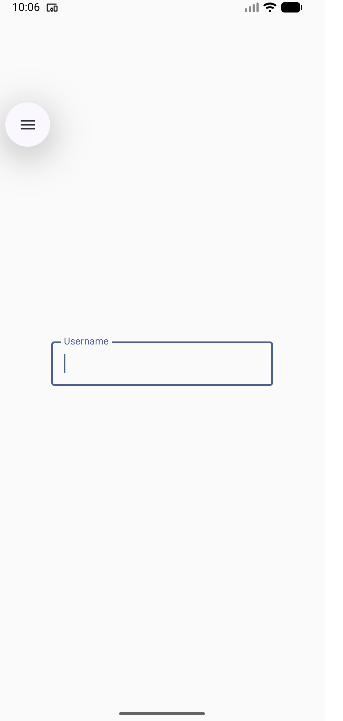
3. Button
Button is used to perform an action when the user clicks on it, such as submitting a form, saving data or navigating to another screen. The Button() composable function is used.
Required parameters: onClick, content
Button(
onClick = {
println("Button Clicked")
},
enabled = true,
shape = RoundedCornerShape(122.dp),
colors = ButtonDefaults.buttonColors(
containerColor = Color.Red,
contentColor = Color.Yellow
)
) {
Text(text = "Click Me")
Spacer(modifier = Modifier.padding(horizontal = 5.dp))
Icon(
imageVector = Icons.Default.Add,
contentDescription = null,
modifier = Modifier.size(ButtonDefaults.IconSize)
)
}4. Dialog Box
A Dialog Box is used to display important messages, warnings or confirmation requests to the user. In Jetpack Compose, the AlertDialog() composable function is commonly used.
Required parameters: onDismissRequest, confirmButton
Common optional parameters: title, text, dismissButton
AlertDialog(
onDismissRequest = { },
title = {
Text("Confirmation")
},
text = {
Text("Are you sure you want to continue?")
},
confirmButton = {
TextButton(onClick = { }) {
Text("OK")
}
},
dismissButton = {
TextButton(onClick = { }) {
Text("Cancel")
}
}
)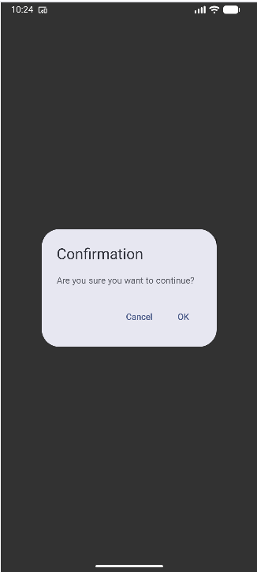
5. Date Picker
Date Picker is used to allow users to select a date, including day, month and year. The DatePicker() composable function is used.
Required parameter: state
val datePickerState = rememberDatePickerState()
DatePicker(datePickerState)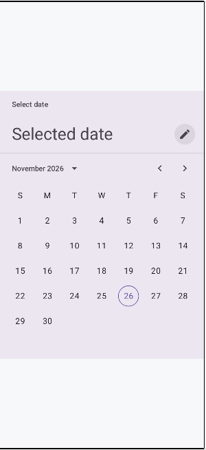
6.Time Picker
Time Picker is used to allow users to select a particular time in hours and minutes. The TimePicker() composable function is used.
Required parameter: state
var timePickerState = rememberTimePickerState()
TimePicker(state = timePickerState)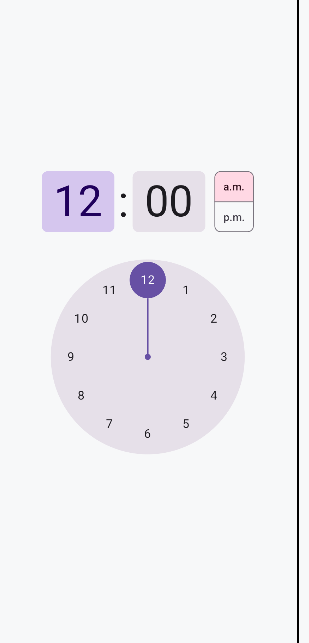
7. Checkbox
Checkbox is used to allow users to select or deselect an option. It also allows users to select multiple options independently. The Checkbox() composable function is used.
Required parameters: checked, onCheckedChange
Row(
modifier = Modifier.padding(horizontal = 16.dp)
.fillMaxWidth()
.heightIn(min = 48.dp),
verticalAlignment = Alignment.CenterVertically
)
{
Checkbox(
checked = true,
onCheckedChange = {}
)
Spacer(modifier = Modifier.width(12.dp))
Text(
text = "Accpet Terms and Condition"
)
}8. Radio Button
Radio Button is used to allow users to select a single option from a group of options. The RadioButton() composable function is used.
Required parameters: selected, onClick
Row(
modifier = Modifier.padding(horizontal = 16.dp)
.fillMaxWidth()
.heightIn(min = 48.dp),
verticalAlignment = Alignment.CenterVertically
) {
RadioButton(
selected = true,
onClick = {}
)
Spacer(modifier = Modifier.width(8.dp))
Text(
text = "Male"
)
Spacer(modifier = Modifier.width(50.dp))
RadioButton(
selected = true,
onClick = {}
)
Spacer(modifier = Modifier.width(8.dp))
Text(
text = "Male"
)
}9. Snackbar
Snackbar is used to display a temporary message, usually at the bottom of the screen, without interrupting the user's activity. The Snackbar() composable function is used.
Required parameter: content
val snackbarHostState = remember { SnackbarHostState() }
LaunchedEffect(Unit) {
snackbarHostState.showSnackbar("Saved Sucessfully!")
}
SnackbarHost(hostState = snackbarHostState)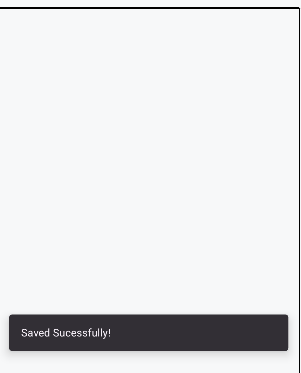
10. List
List is used to display a collection of items in a vertical or horizontal scrollable arrangement. Jetpack Compose provides LazyColumn() for vertical lists and LazyRow() for horizontal lists.
Required parameter: content
@Composable
fun ListCardData() {
val itemsList = listOf("Apple", "Banana", "Cherry", "Date", "Elderberry")
LazyColumn(
modifier = Modifier.fillMaxSize(),
contentPadding = PaddingValues(16.dp),
verticalArrangement = Arrangement.spacedBy(8.dp)
) {
items(itemsList) { item ->
Card(modifier = Modifier.fillMaxWidth()) {
Text(
text = item,
modifier = Modifier.padding(16.dp)
)
}
}
}
}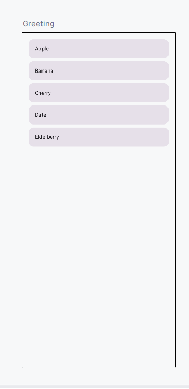
11. Grid
Grid is used to display a collection of items in rows and columns. Jetpack Compose provides LazyVerticalGrid() for vertical grids and LazyHorizontalGrid() for horizontal grids.
Required parameters: columns, content (for vertical grid)
@Composable
fun GridExample() {
val itemsList = (1..20).map { "Item $it" }
LazyVerticalGrid(
columns = GridCells.Fixed(3),
modifier = Modifier.fillMaxSize(),
contentPadding = PaddingValues(16.dp),
verticalArrangement = Arrangement.spacedBy(8.dp),
horizontalArrangement = Arrangement.spacedBy(8.dp)
) {
items(itemsList) { item ->
Card(
modifier = Modifier
.fillMaxWidth()
.height(100.dp)
) {
Box(modifier = Modifier.padding(16.dp)) {
Text(text = item)
}
}
}
}
}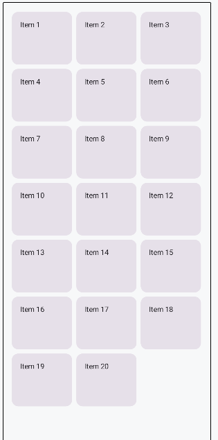
2.5 Intent and its type
An Intent is a messaging object in Android that is used to request an action from another application component. It allows communication between different components of an Android application, such as Activities, Services, and Broadcast Receivers.
In simple words, an Intent is used to tell the Android system what action needs to be performed. For example, an application can use an Intent to open another Activity, start a Service, make a phone call, open a web page, or share data with another application.
An Intent can also carry information from one component to another. This makes it an important part of communication and navigation in Android applications.
The major purposes of Intent are:
- Starting an Activity: An Intent is used to open a new Activity from an existing Activity.
- Starting a Service: It can request a background operation by starting a Service.
- Sending Broadcast Messages: It can send messages to Broadcast Receivers to notify them about particular events.
- Passing Data: An Intent allows data to be transferred between different Activities or components.
- Opening Other Applications: It allows an application to request actions from other applications, such as opening a web browser, sharing text, or composing an email.
Types of Intent in Android
Android provides two main types of Intent:
- Explicit Intent
- Implicit Intent
Explicit Intent
An Explicit Intent is an Intent that directly specifies the application component that should perform an action. It is commonly used to navigate between Activities within the same application.
In an Explicit Intent, the developer provides the exact target component. Therefore, the Android system knows which component needs to be started.
For example, when a user successfully logs into an application, an Explicit Intent can be used to open the Home Activity from the Login Activity.
Example:
val intent = Intent(this@MainActivity, HomePage::class.java)
intent.putExtra("Username", user))
startActivity(intent)
//when receiving in another class
val userName = intent.getStringExtra("Username") ?: ""Implicit Intent
An Implicit Intent is an Intent that does not specify the exact application component that should perform an action. Instead, it describes the action to be performed, and the Android system finds a suitable application or component to handle the request.
In an Implicit Intent, the developer specifies the required action, such as opening a web page, sharing text, or dialing a phone number.
If multiple suitable applications are available, Android may allow the user to choose an application.
For example, when a user clicks a website link, an Implicit Intent can request that Android open the URL using a suitable web browser.
val intent = Intent(Intent.ACTION_VIEW, Uri.parse("https://www.google.com"))
startActivity(intent)Difference Between Explicit and Implicit Intent
| Basis | Explicit Intent | Implicit Intent |
|---|---|---|
| Definition | Specifies the exact target component. | Specifies the action to be performed. |
| Target Component | Already known and defined. | Selected by the Android system based on available handlers. |
| Common Usage | Mainly used within the same application. | Commonly used to interact with other applications. |
| Flexibility | Less flexible because the target is fixed. | More flexible because different applications can handle the action. |
| Example | Opening Home Activity from Login Activity. | Opening a website in a browser. |